Mountain Biking: Preferences & Behavior
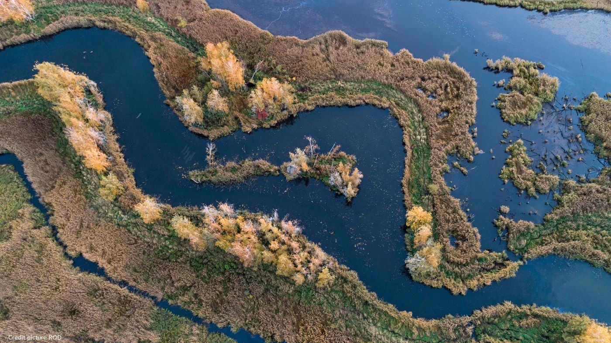
In August 2022, a mass fish kill devastated the Oder River — one of Central Europe's most ecologically significant transboundary waterways. An algal bloom triggered by elevated salinity, warm temperatures, and low flow caused a catastrophic die-off of fish along approximately 500 km of the river, crossing the German-Polish border. The disaster severely impacted recreational fishing and biodiversity, and may have disrupted long-standing cultural connections to the river on both sides of the border — the extent of which remains unclear.
As part of the OderTogether project at Institut für Binnenfischerei e.V. Potsdam-Sacrow (IFB Potsdam), the broader goal is a cross-border social-ecological assessment of how the disaster affected cultural ecosystem services (CES) — the non-material benefits people derive from their relationship with the river. The centrepiece of that work will be a representative resident survey on both sides of the border. This page documents the exploratory spatial analysis that precedes that survey — three independent citizen science and angling datasets used to characterise who uses the corridor, where activity concentrates, and what preliminary signals (if any) are detectable in the data. The numbers themselves should be treated as exploratory — these are self-selected, non-representative datasets and none of the pre/post comparisons are causal.
The study corridor follows approximately 280 km of the Oder River along the German-Polish border, from Eisenhüttenstadt in the south (52.1°N) to Schwedt/Oder in the north (53.1°N). On the German side, the corridor spans the districts of Oder-Spree, Märkisch-Oderland, Barnim, and Uckermark in Brandenburg. On the Polish side it covers the Lubuskie and Zachodniopomorskie voivodeships, with the cities of Słubice, Zielona Góra, and Gorzów Wielkopolski as the main urban centres. Frankfurt (Oder) / Słubice forms the largest cross-border urban agglomeration within the study area and appears as a consistent activity node across all three datasets.
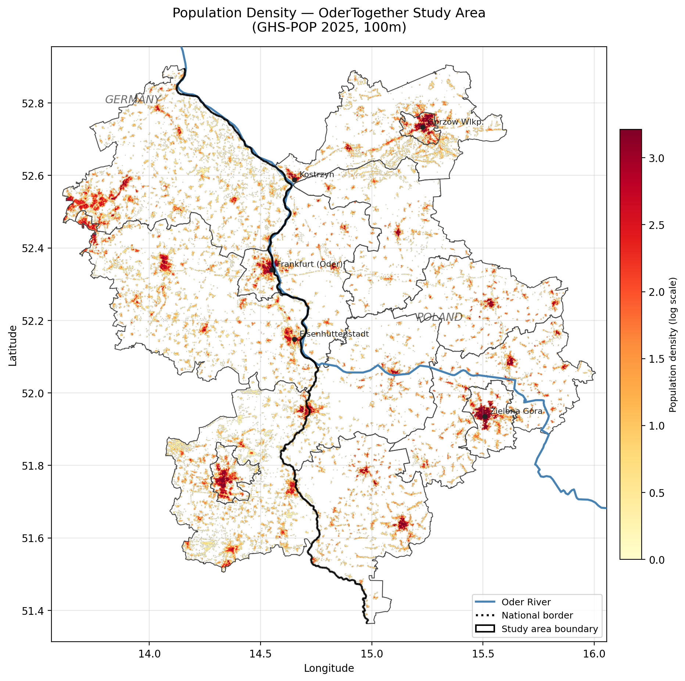
Fig. 1 — Study area and population context. Population density maps show the urban-rural gradient influencing CES demand on both sides of the German-Polish border. Frankfurt (Oder) / Słubice form the largest urban centre within the corridor.
Citizen Science · Biodiversity · Visitors + Locals
iNaturalist records geotagged biodiversity observations submitted by citizen scientists. Along the Oder corridor, observations reflect both ecological monitoring activity and nature-based recreation — a proxy for biodiversity-related CES. Observations were collected via the iNaturalist API within a 5 km buffer of the Oder centerline.
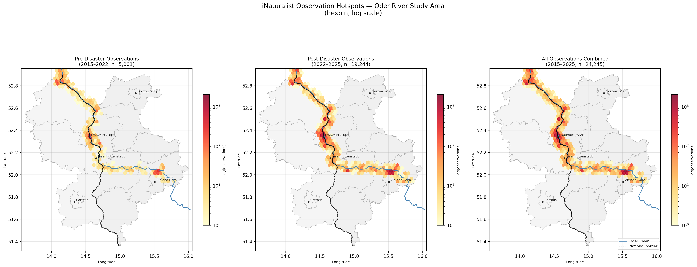
Fig. 2 — iNaturalist observation density along the Oder corridor (hexbin, log scale). Pre-disaster (2015–Jun 2022, n=5,001), post-disaster (Aug 2022–2025, n=19,244), and all years combined (n=24,245). Frankfurt (Oder) and Schwedt/Oder show the highest densities. The post-disaster increase likely reflects platform growth and monitoring interest rather than ecological recovery, and should not be over-interpreted.
Since iNaturalist does not provide user home locations, origins were inferred indirectly. For each user, I geocoded all of their observations outside the Oder corridor using the Nominatim API (OpenStreetMap), then computed the centroid of those observations as a proxy for their home region. Users with ≥60% of their observations inside the corridor were classified as locals; all others as visitors. Travel distance was calculated as the straight-line distance from the inferred home centroid to the nearest point on the Oder centerline.
This is a rough heuristic — it works reasonably well for users with many observations spread across their home region, but breaks down for occasional users or people who observe heavily in multiple places. It also can't distinguish someone who lives 10 km from the corridor but happens to observe mostly elsewhere. With those caveats, roughly 60% of users were classified as visitors, with a median inferred travel distance of 525 km. These numbers are exploratory and not directly comparable to, for example, survey-based visitor origin data.
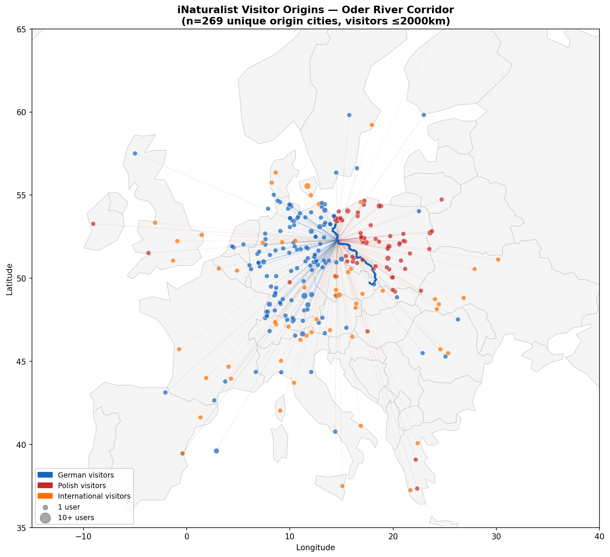
Fig. 3 — iNaturalist observer origins (inferred from observation patterns, not verified home locations). Proportional symbols show observers per home location. Approximately 60% of users are classified as visitors (median travel distance 525 km), mostly from Germany and Poland with some international observers. Results are exploratory — iNaturalist users are a self-selected, non-representative group.
Monthly animation of iNaturalist observations colored by taxonomic group. Each frame represents one month. Activity is strongly seasonal, peaking from May to September. Post-2022 increases in observation density are visible but likely driven largely by platform growth rather than recovery.
Fig. 4 — Monthly iNaturalist observations, 2019–2025. Points colored by taxonomic group (insects, plants, birds, fish, fungi, mammals). Observer and observation counts shown in real time. Strong seasonal signal and post-2022 platform growth both visible.
Citizen Science · Aesthetic CES · Visitors
Geotagged Flickr photos within a 2 km buffer of the Oder centerline were collected and
filtered using CLIP zero-shot image classification
(openai/clip-vit-base-patch32) to retain only nature- and river-relevant
images. CLIP was applied with 16 relevant prompts (river, wetland, wildlife, landscape,
floodplain meadow, etc.) and 18 irrelevant prompts (trains, buildings, interiors,
statues, etc.). Softmax scoring with a threshold of 0.55 retained approximately 25%
of photos as CES-relevant. The 2 km buffer was chosen over the 5 km iNaturalist buffer
to reduce urban noise while retaining riverbank photography.
The contact sheet below shows a random sample of 48 photos retained by the CLIP classifier, illustrating the range of nature- and river-relevant content captured in the dataset. Scores shown are the softmax relevance probability; green indicates above-threshold (kept), red below-threshold (removed).
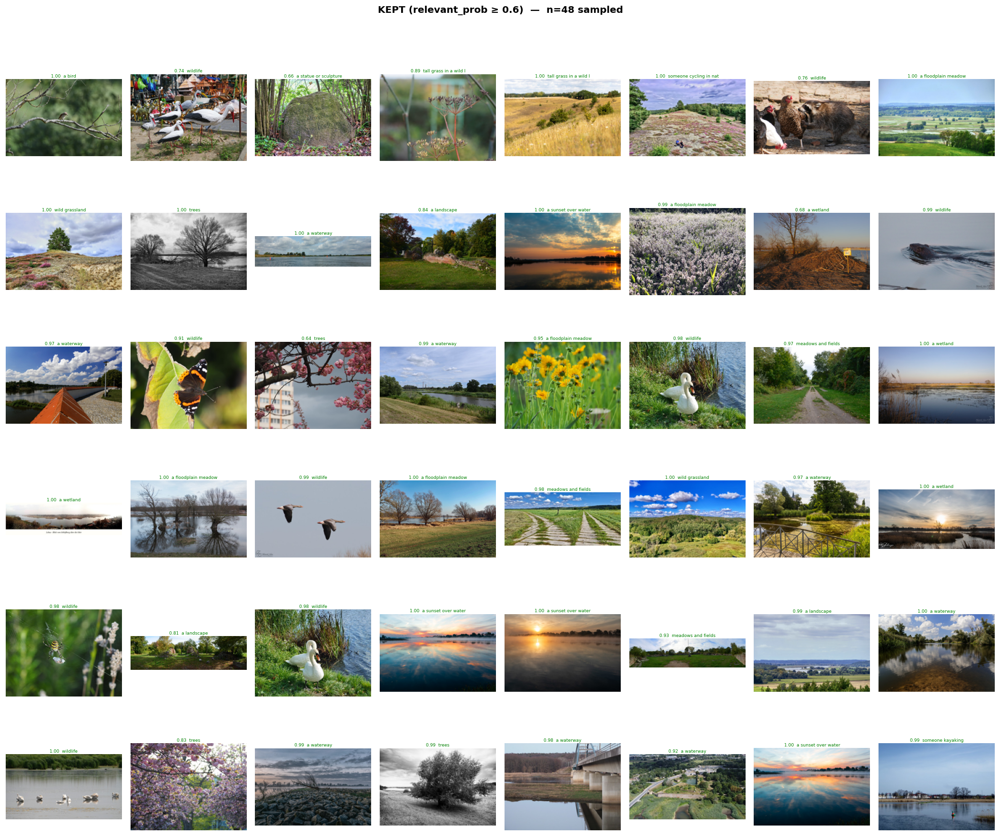
Fig. 5 — Random sample of 48 Flickr photos retained by CLIP classification (relevance probability ≥ 0.55). Content spans river landscapes, wetlands, wildlife, floodplain meadows, and water recreation — the core CES-relevant categories for the Oder corridor analysis.
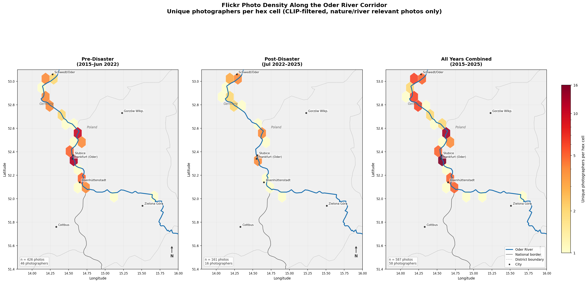
Fig. 6 — Flickr nature photography density along the Oder corridor (unique photographers per hex cell, log scale). Pre-disaster (2015–Jun 2022), post-disaster (Jul 2022–2025), and all years combined. Hotspots concentrate around Frankfurt (Oder) and Schwedt/Oder. Post-disaster density is lower, though confounded by general Flickr platform decline since ~2019.
Angling App · Recreational CES · Local Users
Alle Angeln is a German angling app used to log catch records. Data from IFB Potsdam covering 53 fishing waters in the Brandenburg/Oder region provide a direct measure of recreational fishing activity — a CES severely impacted by the 2022 fish kill. Unlike iNaturalist and Flickr, the Alle Angeln user base is predominantly local Brandenburg residents, making it the strongest signal of CES experienced by riparian communities. Catches were normalized by active anglers per year (≥1 catch logged) to control for platform growth.
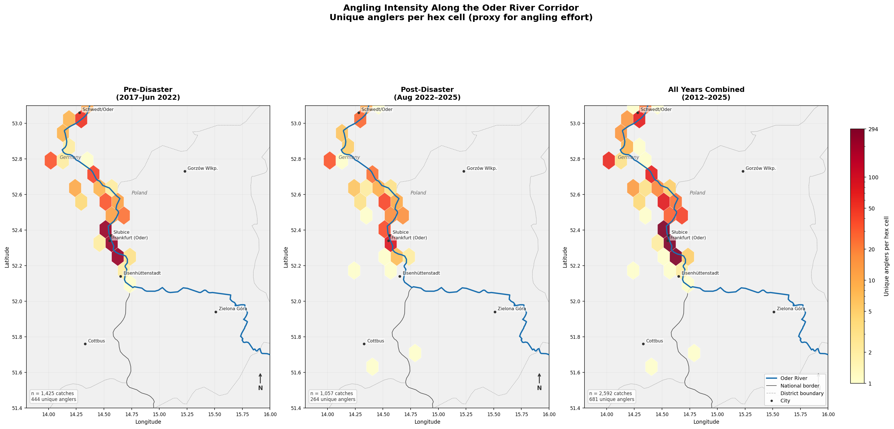
Fig. 7 — Angling intensity along the Oder corridor (unique anglers per hex cell, log scale; proxy for angling effort). Pre-disaster (2017–Jun 2022), post-disaster (Aug 2022–2025), and all years combined. Frankfurt (Oder) dominates both periods. Post-disaster intensity is visibly reduced in mid-corridor sections.
Angler home locations were inferred from zip codes in the Alle Angeln user database, then geocoded via Nominatim to get coordinates. Each angler was linked to their primary fishing water (most catches logged), and straight-line travel distance was calculated between home zip centroid and water centroid. Of 647 anglers with complete zip and catch data, the median travel distance was just 33 km — confirming that this dataset captures a predominantly local user base, in contrast to the visitor-dominated iNaturalist signal. However, the mean distance is 174 km, pulled up by a tail of anglers travelling from across Germany, particularly from Berlin, Hamburg, and the coast.
The largest fishing water by far is Oder (Frankfurt/Oder) with 285 anglers, followed by the Hohensaaten-Friedrichsthaler Wasserstraße at Schwedt (76) and the Alte Oder at Gorgast-Golzow (60) — consistent with the hexbin hotspot pattern.
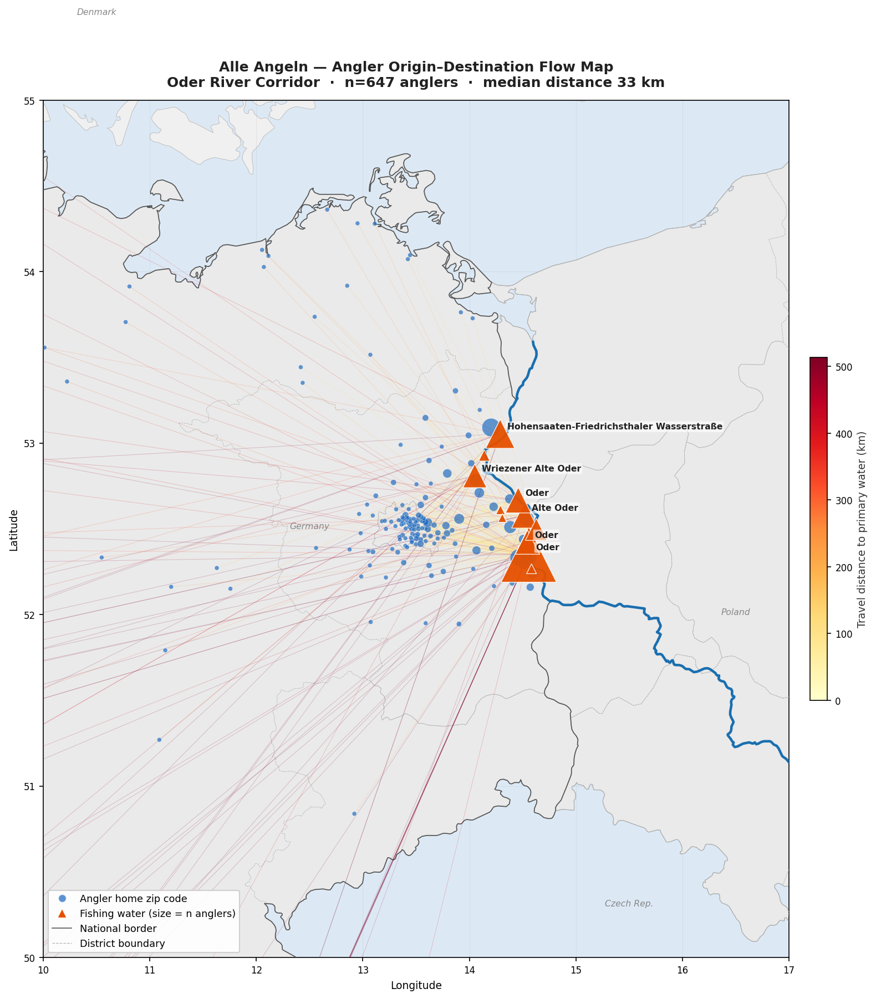
Fig. 8 — Angler origin–destination flow map. Lines connect home zip code centroid (blue circles, size = n anglers) to primary fishing water (orange triangles, size = n anglers). Line colour indicates travel distance (yellow = near, red = far). n=647 anglers with complete data. Median distance 33 km; mean 174 km driven by a long-distance tail.
Annual catches per active angler broken down by species reveal contrasting trajectories post-disaster. Large predatory species (Zander, Rapfen, Wels) show the steepest declines, while Hecht (pike) and Flussbarsch (perch) show increases possibly reflecting competitive release. These patterns are suggestive but should be interpreted cautiously — they depend on effort normalization assumptions and the active angler definition, and per-species sample sizes are modest.
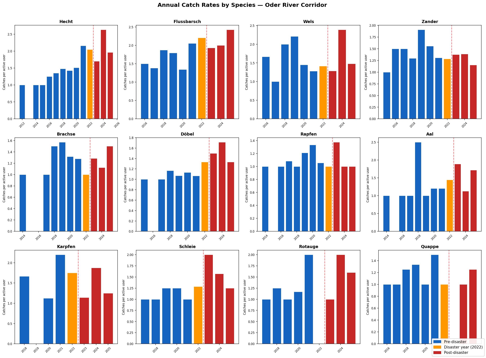
Fig. 9 — Annual catches per active angler by species (effort-normalized). Colors indicate pre-disaster (blue), disaster year 2022 (orange), and post-disaster (red). Vertical dashed line marks August 2022 disaster onset. Zander −51%, Rapfen −64%, Wels −23% post-disaster. Results are indicative only given small per-species sample sizes.
Catch size distributions depend less on effort normalization assumptions than catch rates, making them a somewhat more direct signal. The most notable pattern is a large drop in median Wels (catfish) length — from 111 cm pre-disaster to 50 cm post-disaster. This could be consistent with preferential loss of large individuals during the fish kill, though sample sizes are small and alternative explanations (e.g. targeting behaviour, reporting changes) cannot be ruled out. Patterns in other species are less pronounced.
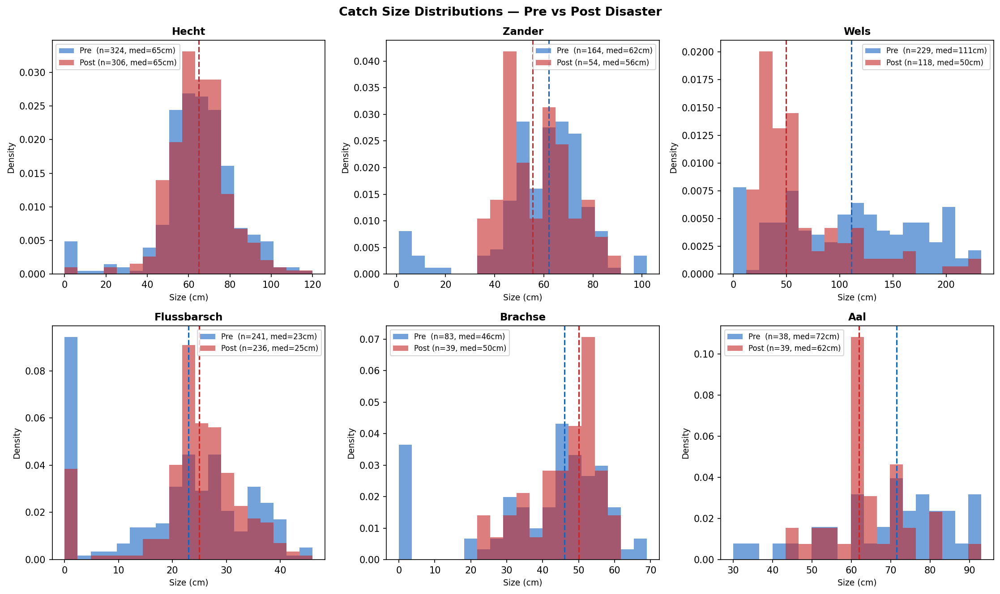
Fig. 10 — Catch size distributions for six species, pre- vs. post-disaster. Histograms show length (cm) with median lines marked. The Wels median dropped 62 cm post-disaster — the largest size-structure shift in the dataset and among the least effort-dependent signals. Sample sizes shown in legend; interpret with caution.
Three independent citizen science datasets were collected, cleaned, and analyzed using Python. Spatial analysis was conducted within 2–5 km buffers of the Oder centerline (Natural Earth 1:10m river layer). All hexbin maps use a shared geographic extent (13.8–16.0°E, 51.4–53.1°N) with gridsize = 20 (~2 km cells) and log-normalized shared color scales across pre/post/combined panels.
Observations collected via iNaturalist API v1 within a 5 km river
buffer. User origins inferred from observation patterns using Nominatim geocoding
with a 60% inside-corridor threshold for local/visitor classification. Hexbin
intensity = unique observers per cell.
Photos collected via Flickr API within a 2 km buffer. Zero-shot
classification using openai/clip-vit-base-patch32: 16 relevant +
18 irrelevant prompts, softmax scoring, threshold = 0.55. ~25% of photos retained.
Hexbin intensity = unique photographers per cell.
Catch records from IFB Potsdam database (2012–2025). Active angler = ≥1 catch logged per year, used as effort denominator. Pre/post comparison: 2017–Jun 2022 vs. Aug 2022–2025. Species-level analysis for 14 species with ≥30 catch records. Hexbin intensity = unique anglers per cell.
Disaster onset defined as August 2022 (peak fish kill reports). Pre-disaster baselines: 2017–Jun 2022 (Alle Angeln), 2015–Jun 2022 (Flickr, iNaturalist). July 2022 excluded as transition month. Platform growth confounds acknowledged; active-user normalization applied where possible.
Hexbin aggregation (gridsize=20, ~2 km cells) on a shared geographic
extent. Unique users/photographers/anglers per hex cell used as intensity metric to
reduce influence of prolific individual contributors. Log-normalized color scales
shared across panels per dataset.
Citizen science data subject to observer bias and platform adoption trends. Flickr platform decline since ~2019 confounds pre/post comparisons. Alle Angeln lacks trip-level effort data. iNaturalist post-disaster increase partly reflects platform growth. No equivalent Polish angling dataset exists, leaving the recreational fishing CES picture incomplete for the Polish side of the corridor.
Placing the "all years combined" panel from each dataset side by side gives the clearest spatial comparison — free from the pre/post platform growth confounds that complicate the individual period maps.
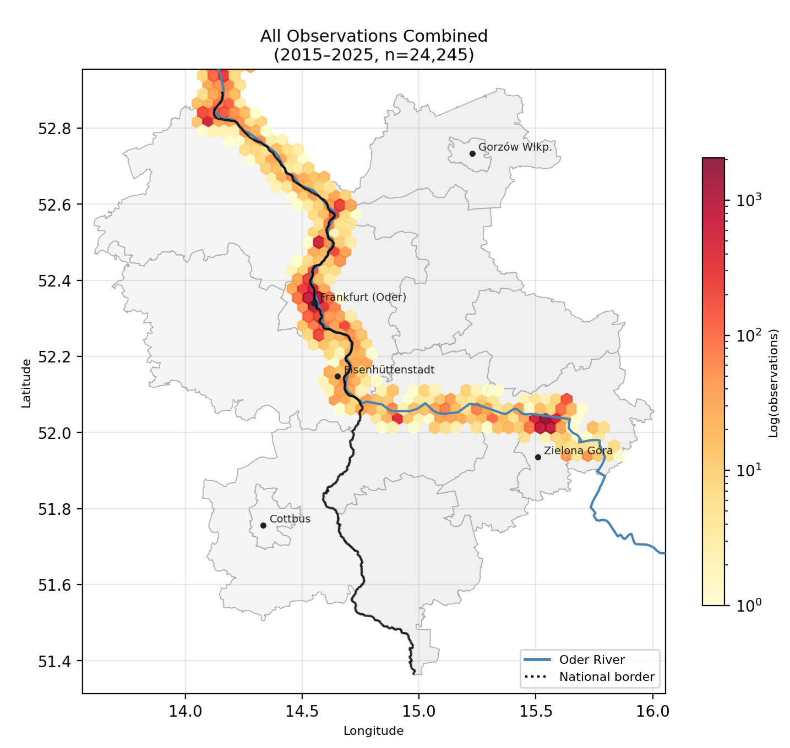
iNaturalist
Biodiversity observations
2015–2025 · unique observers
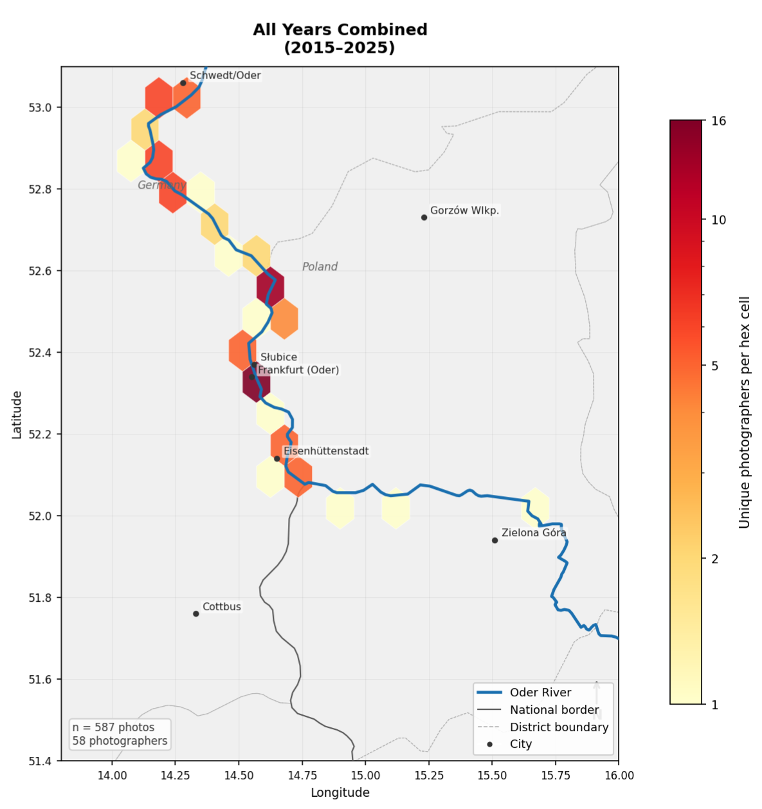
Flickr
Nature photography
2015–2025 · unique photographers
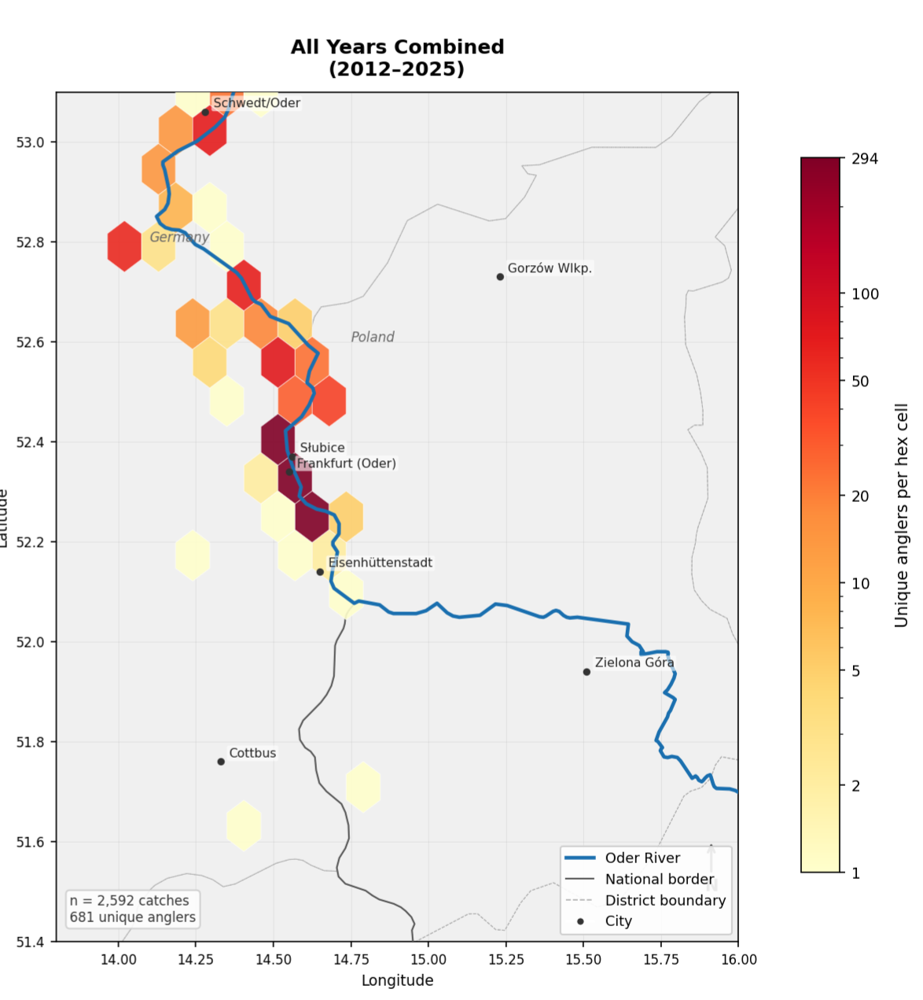
Alle Angeln
Recreational angling
2012–2025 · unique anglers
Each map shows unique users per hex cell (log scale), pre-disaster / post-disaster / all years combined. Frankfurt (Oder) and Schwedt/Oder appear as relatively active nodes across datasets, though the spatial patterns reflect each platform's own user base and geographic biases as much as underlying CES intensity.
These three datasets are opportunistic — collected via apps and platforms not designed for CES research — and none is population-representative. They should be interpreted as exploratory rather than definitive. Their primary value is methodological: together they help spatially characterize where CES activity is concentrated along the corridor, identify which user communities are engaged, and generate hypotheses for follow-up surveys. A future paper may formalize this triangulation approach, but the datasets alone cannot support causal claims about disaster impact on CES at a population level.
Mountain Biking: Preferences & Behavior

Wolf Project: Longitudinal survey trends

Angler Satisfaction Model

Fishermen Feedback: Sentiment + Locations
I'm always open to discussing research opportunities, collaborations, or applications of data science to natural resource management.